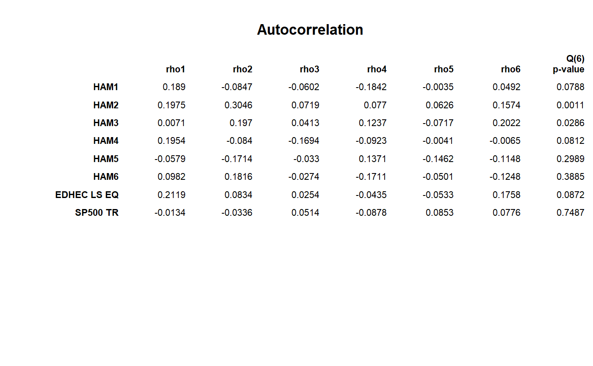

Produces data table of autocorrelation coefficients \(\rho\) and corresponding Q(6)-statistic for each column in R.
table.Autocorrelation(R, digits = 4)
| R | an xts, vector, matrix, data frame, timeSeries or zoo object of asset returns |
|---|---|
| digits | number of digits to round results to for display |
To test returns for autocorrelation, Lo (2001) suggests the use of the
Ljung-Box test, a significance test for the auto-correlation coefficients.
Ljung and Box (1978) provide a refinement of the Q-statistic proposed by Box
and Pierce (1970) that offers a better fit for the \(\chi^2\) test
for small sample sizes. Box.test provides both.
Lo, Andrew W. 2001. Risk Management for Hedge Funds: Introduction and Overview. SSRN eLibrary.
Box.test, acf
data(managers) t(table.Autocorrelation(managers))#> rho1 rho2 rho3 rho4 rho5 rho6 Q(6) p-value #> HAM1 0.1890 -0.0847 -0.0602 -0.1842 -0.0035 0.0492 0.0788 #> HAM2 0.1975 0.3046 0.0719 0.0770 0.0626 0.1574 0.0011 #> HAM3 0.0071 0.1970 0.0413 0.1237 -0.0717 0.2022 0.0286 #> HAM4 0.1954 -0.0840 -0.1694 -0.0923 -0.0041 -0.0065 0.0812 #> HAM5 -0.0579 -0.1714 -0.0330 0.1371 -0.1462 -0.1148 0.2989 #> HAM6 0.0982 0.1816 -0.0274 -0.1711 -0.0501 -0.1248 0.3885 #> EDHEC LS EQ 0.2119 0.0834 0.0254 -0.0435 -0.0533 0.1758 0.0872 #> SP500 TR -0.0134 -0.0336 0.0514 -0.0878 0.0853 0.0776 0.7487 #> US 10Y TR 0.0398 -0.1739 0.1049 -0.0355 -0.1116 -0.0602 0.2199 #> US 3m TR 0.9224 0.9081 0.8968 0.8746 0.8363 0.8127 0.0000result = t(table.Autocorrelation(managers[,1:8])) textplot(result, rmar = 0.8, cmar = 2, max.cex=.9, halign = "center", valign = "top", row.valign="center", wrap.rownames=15, wrap.colnames=10, mar = c(0,0,3,0)+0.1)title(main="Autocorrelation")